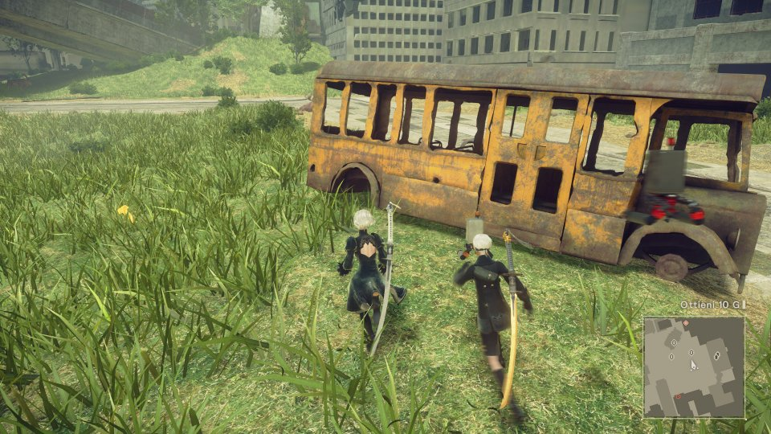

Home
Recensioni
Assassin's Creed
Horizon Zero Dawn
Resident Evil 7
Watch Dogs 2
News
Batman
Nier Automata
Project Scorpio
Valve
Nier: Automata Ha Venduto 200.000 Copie Su Pc In Due Settimane
NieR: Automata e' arrivato su PC il 17 marzo, ad una settimana di distanza dalla controparte PlayStation 4, con qualche problema di natura tecnica che peraltro alcuni modder hanno gia' provato a risolvere. Secondo i dati forniti da SteamSpy, il nuovo titolo di Yoko Taro e Platinum Games ha venduto 200.000 copie su Steam nell'arco di due settimane. Per Square Enix si tratta del miglior risultato mai registrato sulla piattaforma di Valve.
